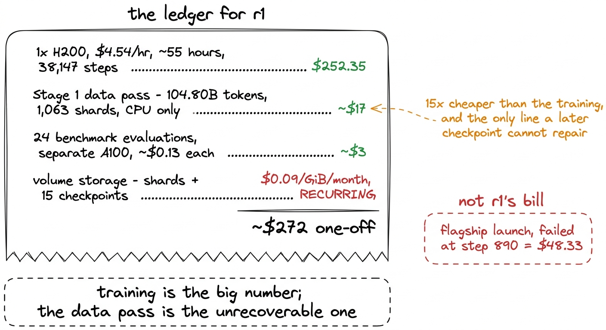
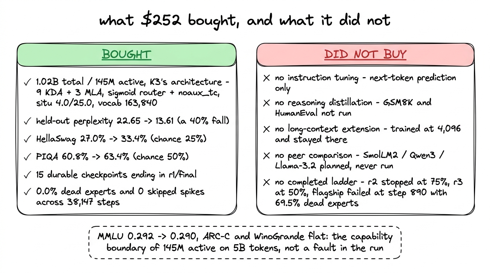
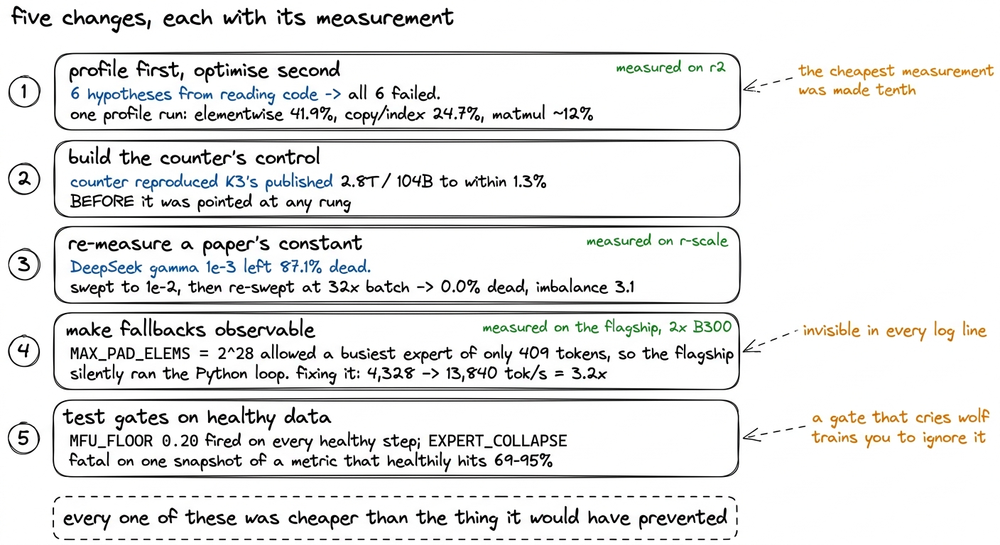
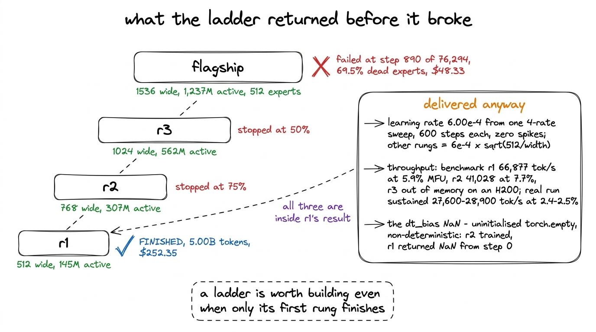
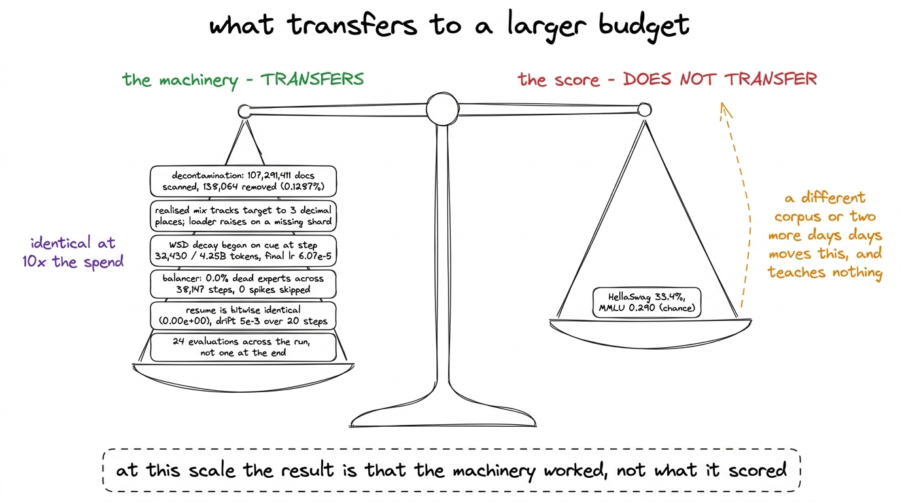
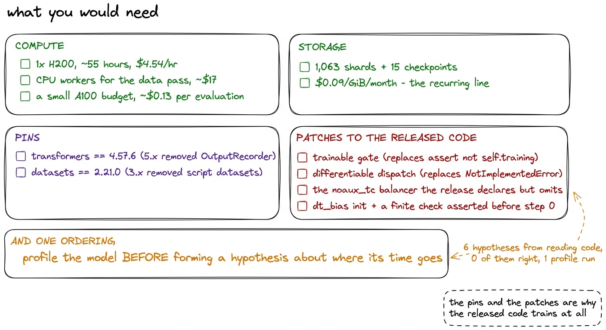

What $252 buys
The full ledger, what we would do differently, what the rungs above r1 were for, and the difference between a small model that works and a small model that is merely finished.
The bill for r1 is short enough to print in full, so we will start there and then argue about what it means.
The run itself cost $252.35. That is one H200 at $4.54 per hour for a little under 55 hours, covering all 38,147 steps and all 5,000,003,584 tokens.1 $252.35 divided by $4.54 per hour is 55.6 hours of billed time. That figure includes checkpoint writes, the 23-hour time-box handoffs and the container restarts they entail, so it is wall-clock rental rather than pure step time. Before any of that could start, the corpus had to be built: 104.80 billion tokens across 1,063 shards from six sources, downloaded, deduplicated against eight benchmark test sets and tokenized. That pass ran on CPU workers and cost roughly $17 in total. While the run was in flight, continuous benchmark evaluation ran on a separate A100 every thousand steps or so, at about $0.13 per evaluation across 24 evaluations. And underneath all of it sits the volume that holds the shards, the checkpoints and the frozen evaluation subsets, billed at $0.09 per GiB per month, which is the only line on this bill that keeps arriving after the work stops.2 Storage is also the line that decides the retention rule. r1 keeps 15 checkpoints under last-three-plus-every-5,000th. At the flagship's roughly 213 GB per checkpoint and a 250-step interval, keeping every checkpoint would have come to 128 PB, which is not a storage bill so much as a design error with a price attached.
| line | what it covers | amount |
|---|---|---|
| r1 GPU time | 1x H200 at $4.54/hour, ~55 hours, 38,147 steps | $252.35 |
| Stage 1 data pass | 104.80B tokens, 1,063 shards, six sources, CPU only | ~$17 |
| continuous evaluation | 24 evaluations on a separate A100 at ~$0.13 each | ~$3 |
| volume storage | shards, 15 checkpoints, frozen eval subsets | $0.09/GiB/month, recurring |
The single number worth carrying out of that table is not the total. It is that the compute for training was about fifteen times the compute for preparing the data, and that the data pass is the part where a mistake is unrecoverable. A corrupted shard mix is not something a later checkpoint can fix.

figure rendering · The complete cost of r1. The flagship's failed launch is listed separaWhat $252 bought
A 1.02-billion-parameter model with 145 million parameters active per token, built to K3's own architecture rather than to a resemblance of it: nine KDA layers and three MLA layers, with full attention on every fourth layer as K3 places it, the same 128/64/128 latent-attention split, a sigmoid router with the noaux_tc balancer, the situ activation at K3's own 4.0 and 25.0 constants, and K3's 163,840-token tokenizer unmodified. Two deviations are stated wherever they matter: tied embeddings, and 256 experts against the flagship's 512.
It halved its held-out perplexity. The first evaluation, at 1.691 billion tokens, read 22.65; the last, at 5.000 billion, read 13.61, a fall of 40%, with the steepest part of it inside the decay phase that began at step 32,430. On HellaSwag it moved from 27.0% to 33.4% against a 25% chance level, and on PIQA from 60.8% to 63.4% against 50%. On MMLU it read 0.292 at the first evaluation and 0.290 at the last, which is chance at both ends and chance everywhere in between. ARC-Challenge and WinoGrande did the same. The evaluation chapter argues that those flat lines describe the capability boundary of a 145M-active model trained on 5B tokens rather than any defect in the run, and we will not re-argue it here.
It also produced 15 durable checkpoints on the kimi-mini-ckpt volume under the retention rule of last-three-plus-every-5,000th, ending in r1/final. Each of those is the whole run rather than the weights: model, optimizer moments, dataloader cursor, the four RNG streams, the spike-guard EMA, tokens seen and spend to date. Any of them can be resumed from, and the first step after a resume reproduces the original bitwise.
What $252 did not buy
Five things, stated without cushioning.
No instruction tuning. r1 has only ever done next-token prediction. There was no SFT stage, no preference optimisation and no chat template. Prompting it the way one prompts an assistant will produce continuation, not compliance.
No reasoning distillation. Nothing was distilled from K3 or from any other model. The two benchmarks that would test reasoning behaviour, GSM8K and HumanEval, are post-training benchmarks and were deliberately not run.
No long-context extension. r1 was trained at a 4,096-token context and stayed there. K3 declares a 1,048,576-token maximum position; we inherited the architecture, not the context length, and no extension stage was performed.
No peer comparison. Runs against SmolLM2-1.7B, Qwen3-1.7B and Llama-3.2-1B were planned and never executed. We therefore have no evidence about how r1 sits against models of similar size, and the 33.4% HellaSwag figure should be read against the 25% chance level and against r1's own earlier checkpoints, which is the only comparison we actually made.
No completed scaling ladder. r2 stopped at 75% of its token budget and r3 at 50% when the compute workspace was disabled. The flagship, the 35.56-billion-parameter model the ladder existed to price, failed: 69.5% dead experts, load imbalance between 74 and 85, then a stall at step 890 of 76,294, having spent $48.33. That $48.33 is on a separate line in the figure above because it bought a diagnosis rather than a model.

figure rendering · The two halves of the result, listed together so neither can be read wFive things we would do differently
These are specific rather than reflective. Each one has a measurement attached and a cost we can name.
Profile before optimising. Six of the sixteen MFU attempts were hypotheses formed by reading the model code and reasoning about where the arithmetic went: padding waste, model size, chunked expert buffers, float32 activations inside situ, the attention and KDA kernels, and torch.compile. All six were measured on r2, the rung above ours, and all six failed. The profile that explained why every one of them had to fail took a single run to produce, and it showed 41.9% of GPU time in elementwise operations, 24.7% in copies and indexing, and only about 12% in matrix multiplication. A model spending an eighth of its time on arithmetic cannot be helped by making the arithmetic cheaper. The profile should have been the first measurement rather than one taken after six hypotheses had already been tried and discarded.3 The first version of the profile table was itself wrong, and in a way worth knowing about: it summed PyTorch operator rows together with the CUDA kernels those operators launch, which double-counts. It reported an unexplained 30.2% "other" and copies at 8.6%. Counting CUDA kernels only, copies are nearly three times larger.
Build the counter's control before trusting any architecture table. Our parameter counter was run against K3's own released configuration before it was ever pointed at a rung of the ladder. It measured 2,779.5B total and 105.4B active, within 1.3% of Moonshot's published 2.8T and 104B. Without that agreement, every parameter figure in this book is an assertion about a script. With it, they are measurements. The same discipline caught the design error that mattered most. Sizing the rungs on total active parameters hides an embedding tax: at hidden 512, K3's 163,840-token embedding is 83.9M parameters, which is 58% of r1's active parameters, so a rung asked to be "40M active" carries an embedding twice that size before any layer runs. The rungs are therefore sized on non-embedding active parameters, which is also why Kaplan et al. and Chinchilla exclude embeddings. The counter made the same point at the top of the ladder: everything that runs for every token before a single routed expert is counted came to 834M — KDA 340.3M, tied embedding 251.7M, shared experts 135.7M, latent projections 54.3M, dense MLP 33.0M, router 13.6M, MLA 5.3M. The original design target of 567M active was not reachable at all, and a script that had never been checked against a known model would have reported the target as met.
Measure a constant from a paper against your own conditions. DeepSeek-V3's balancer step of gamma = 1e-3 is correct for DeepSeek-V3. At our batch it left 87.1% of experts dead after 120 steps. The value that worked, 1e-2, was found by sweeping four values, and it was then re-measured when the batch changed by a factor of 32 from 4,096 to 131,072 tokens per step, where it produced 0.0% final dead experts and an imbalance of 3.1. The second sweep cost very little and removed the last reason to doubt the first.
Make every fallback path observable. The fused expert dispatch caps its padded buffer at MAX_PAD_ELEMS = 2^28 elements and reverts to the per-expert Python loop above that cap, silently. On the flagship, measured on 2x B300, that cap allowed a busiest-expert token count of only 409, so the flagship's MoE layers were quietly running the loop the kernel was written to replace. The same cap permits 1,260 on r3, which is why the condition did not appear lower down the ladder. Fixing it was worth 3.2x: 7.571 seconds and 4,328 tokens per second on the fallback against 2.368 seconds and 13,840 tokens per second auto-chunked, at 32,768 tokens per step. The condition was invisible in every log line the run produced. It was found from two shapes that no scaling story generates: a non-monotonic throughput curve and peak memory that did not change when the batch grew fourfold.
Test monitoring gates against healthy data as hard as against broken data. Two thresholds in the watchdog became actively dangerous the moment auto-stop started working. MFU_FLOOR = 0.20 fired on every step of every healthy run in the project, because measured MFU here is 5 to 8%. EXPERT_COLLAPSE was FATAL on a single snapshot of a metric whose healthy trajectory passes through 69 to 95% dead experts in the first thirty steps. Half of the 24 failure-injection tests now assert that gates stay silent on healthy training and on look-alikes: a plateau during decay, a flat loss at step 500, a collapse that recovers. The collapse gate requires five consecutive reports and the MFU floor sits at 3%.

figure rendering · The five changes, with the measurement that motivates each and the runWhat the rungs above r1 were for
Only r1 finished, which invites the question of whether building a four-model ladder was worth it. Three things came back before the ladder broke, and each of them is in r1's result.
It fixed the learning rate. One sweep at r1's width, four rates for 600 steps each with zero loss spikes, gave 6.00e-4. Every rung above it takes 6e-4 * sqrt(512 / width), which is standard-parameterisation transfer rather than muP, and is the weakest assumption in the recipe. We say so wherever the number appears. Without the sweep, r1's peak learning rate would have been a guess carried for 38,147 steps.
It measured throughput, so the budget was priced from data. The benchmark harness measured r1 at 66,877 tokens per second and 5.9% MFU with a 16,384-token microbatch; r2 at 41,028 tokens per second and 7.7%; r3 out of memory on an H200 entirely, which is a budget fact before it is an engineering one. The real run then sustained 27,600 to 28,900 tokens per second at 2.4 to 2.5% MFU, well below its own benchmark, and reporting both is what makes the second number believable.4 The gap between harness and run is not mysterious once it is written down: the harness measures a fixed shape with a warm allocator, and the run measures a schedule, a dataloader reading from a volume, checkpoint commits every 100 steps and 55 hours of thermal reality. It is still a factor of two, and it is why we quote the run's figure for cost and the harness figure only when comparing configurations.
It caught a NaN for the price of a small run. KimiDeltaAttention.dt_bias is allocated with torch.empty and the released _init_weights covers only nn.Linear and nn.Embedding, so KDA's timestep bias is uninitialised memory. This fails non-deterministically. r2 trained normally on it. r1 returned NaN from step 0. Had the ladder been skipped and the flagship launched directly, that bug would have been found on 2x B300 at $7.10 per hour per card, or worse, not found at all on a rung where the memory happened to be benign.
There is a fourth thing the ladder returned that we can only partly use. At equal token counts early in training, HellaSwag ordered by capacity: r3 28.4%, r2 27.6%, r1 27.0%. That is the shape a ladder is supposed to produce, and it is the only cross-rung capability comparison we have, because r2 and r3 never reached the end of their budgets.

figure rendering · The ladder, what happened to each rung, and the three results the unfiThe result worth reporting
At 1.02 billion parameters and 5 billion tokens, the benchmark scores are not the interesting output. 33.4% on HellaSwag is a real number and it is above chance, and it also tells a reader very little they could not have guessed from the parameter count. It does not transfer. A different corpus, a different tokenizer or another two days of compute would move it, and nothing about how it was obtained would be reusable.
What transfers is the machinery, and the machinery worked:
- The corpus was decontaminated before tokenization, not after: 107,291,411 documents scanned, 138,064 removed, 0.1287%, against a 13-gram index of 2,398,082 unique n-grams over eight evaluation sets. The maths corpora dropped about ten times more than the web — finemath at 0.7239% and open-web-math at 0.6747% against fineweb-edu's 0.0856% — which is the shape that makes the filter believable, because a filter firing uniformly would have been the worrying result. Its limits are on the same page as its results: a benchmark row shorter than thirteen words produces no 13-gram and cannot be filtered against, so TriviaQA is only 49% covered, 9,163 of its 17,944 rows being too short, PIQA is next lowest at 92%, and five of the eight sets sit at 99 to 100%. HumanEval's 88.78 hits per indexed n-gram is not a contamination finding either: normalisation strips punctuation, which is right for prose and destructive for code, so de-punctuated 13-word windows of Python are common idiom rather than leakage.5 Corpus damage from that over-matching was 0.225% of the code corpus, which did not warrant a re-ingest. The compounding cause was indexing HumanEval's
testcolumn, which is near-identical scaffolding across all 164 problems. - The realised training mix tracked the target mix to three decimal places: fineweb-edu 59.5%, web-diverse 25.5%, code-python 10.0%, finemath 3.0%, open-web-math 2.0%, each against the same target. That it can be checked at all is the result of a bug found earlier, in which mangled shard names left four of six sources pointing at files that did not exist and the loader silently renormalised onto the two that survived, so the stable phase would have trained on 100% finemath. The loader now raises on any missing shard rather than renormalising onto whatever is left.
- The schedule annealed on cue. The decay phase began at step 32,430 and 4.25 billion tokens, exactly where the WSD configuration put it, and the learning rate landed at 6.07e-5.
- The balancer held. 0.0% dead experts at step 0 and at step 38,140, with load imbalance drifting from 2.36 to 4.0, which is a router specialising rather than collapsing. Zero loss spikes were skipped across the entire run.
- Checkpoints resume correctly, and this was proven rather than assumed.
resume_equivalencetrains past a checkpoint twice and compares per-step losses; it found a real off-by-one, and after the fix the first resumed step is bitwise identical at 0.00e+00, with 5e-3 of drift over 20 steps that is bf16 non-determinism. - Evaluation was taken 24 times across the run rather than once at the end, so the perplexity fall from 22.65 to 13.61 is a curve with a visible knee at the decay transition rather than a single endpoint.
Every one of those properties holds at a larger budget, and none of them get easier to add later. The parts of this project that would be identical at ten times the spend are the decontamination report, the checkpoint semantics, the failure-injection suite, the balancer constant and the provenance discipline that keeps a benchmark figure from being quoted as a run figure. The 33.4% would be a different number and would have been obtained the same way.

figure rendering · The two outputs of the run, weighed against each other. Only one of thIf you want to do this yourself
The requirements are small enough to list.
Compute: one H200 for about 55 hours, plus a handful of CPU-hours for the data pass and a small A100 budget for evaluation. Storage for 1,063 shards and 15 checkpoints, billed monthly, which is the line to plan for rather than the GPU.
Pins: transformers at 4.57.6, because >=4.56 resolves to 5.x and 5.x removed OutputRecorder, which the Kimi modeling code imports at module scope. datasets at 2.21.0, because 3.x removed script datasets and the evaluation sets need them.
Patches: the released modeling code cannot train as shipped. A trainable gate in place of the assert not self.training, a differentiable dispatch in place of the NotImplementedError and its @torch.no_grad() inference path, the noaux_tc balancer that the release declares but does not implement, and a Mamba-style initialisation for dt_bias with a finite check asserted before step 0. Expect the sdpa shim registered under the flash_attention_2 key, and expect gradient_checkpointing_enable() to be a no-op until use_cache = False.
Discipline: a 13-gram decontamination index built before tokenization, with its coverage limits reported rather than buried. A checkpoint that carries the dataloader cursor and the RNG streams, committed on every save. A heartbeat timestamp compared against the wall clock, never a log stream. A failure-injection suite where half the tests assert silence.

figure rendering · The complete requirement list, in the order it is needed.And one ordering, which is the change we would make first if we ran this again: profile the model before forming a single hypothesis about where its time goes. The six that were formed by reading code cost more than the run that answered the question.